전자계산기기능사 (2004-10-10 기출문제)
1과목: 전기전자공학
1. 콘덴서 입력형 평활회로를 사용한 반파정류기의 입력전압이 실효값으로 100V일 때 정류 다이오드의 첨두 역전압은 약 몇 V 인가?
- 100
- 140
- 200
- 280
(정답률: 28%)

2. 가청 주파수 증폭기에 가장 적합한 것은?
- A급
- B급
- C급
- AB급
(정답률: 46%)
3. 일정 주파수의 정현파에 대한 변조파로 반송파를 변조했을 경우, 직선 검파한 출력에 포함되는 고조파분의 기본 파분에 대한 퍼센트 또는 데시벨로 표시되는 것은?
- 잡음
- 왜율
- 충실도
- 잡음지수
(정답률: 49%)
4. 구형파의 입력을 가하여 폭이 좁은 트리거 펄스를 얻는데 사용되는 회로는?
- 적분회로
- 미분회로
- 발진회로
- 클리핑회로
(정답률: 43%)
5. 그림에서 AD점사이의 합성저항은 몇 Ω 인가?(단, 각 저항의 값은 8Ω 이다.)
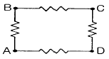
- 6
- 9
- 24
- 32
(정답률: 29%)
6. 일정 전압의 직류전원에 저항을 접속하고 전류를 흘릴 때, 이 전류값을 20% 증가시키기 위한 저항값은 몇 배로 하여야 하는가?
- 0.80
- 0.83
- 1.20
- 1.25
(정답률: 47%)
7. 병렬공진회로에서 공진주파수 fo= 455kHz, L= 1mH, Q=50 이면 공진 임피던스는 약 몇 kΩ 인가?
- 83
- 103
- 123
- 143
(정답률: 35%)
8. 마이크로파대에서 광대역 증폭을 쉽게 할 수 있는 것은?
- 클라이스트론(klystron)
- 에이컨관(Acorn tube)
- 판극관(Disk seal tube)
- 진행파관(Traveling wave tube)
(정답률: 46%)
9. 그림과 같은 증폭회로에 (+)신호전압이 가하여졌을 때의 동작상태를 옳게 나타낸 것은?
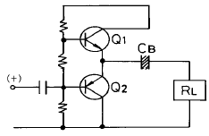
- Q1(ON), Q2(ON)
- Q1(OFF), Q2(ON)
- Q1(ON), Q2(OFF)
- Q1(OFF), Q2(OFF)
(정답률: 46%)
10. 이상적인 다이오드를 사용하여 그림에 나타낸 기능을 수행할 수 있는 클램프회로를 만들 수 있는 것은? (단, Vi=입력파형, Vo=출력파형)
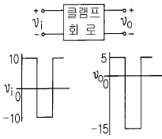
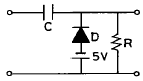
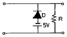
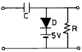
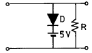
(정답률: 49%)
2과목: 전자계산기구조
11. 6 단위 종이 테이프(paper tape)에 6 개의 구멍으로 표시되는 문자의 종류는?
- 12
- 36
- 48
- 64
(정답률: 45%)
12. 일단 사용하고 남은 기억공간을 모아서 유용하게 능률적으로 사용하도록 하는 방법은?
- garbage collection
- Memory collection
- Multiprogramming
- relocation
(정답률: 51%)
13. 입력 자료의 내용이 1만큼씩 증가되는 연산으로 프로그램 카운터 또는 스택 포인터(stack pointer) 등의 내용을 증가시킬 때 사용되는 것은?
- increment 연산
- clear 연산
- rotate 연산
- shift 연산
(정답률: 41%)
14. 부호화된 2진 데이터를 10진의 문자나 기호로 다시 변환시키는 회로는?
- Encoder
- Decoder
- Counter
- Hoffer
(정답률: 68%)
15. 패리티 규칙으로 코드의 내용을 검사하며, 잘못된 비트를 찾아서 수정할 수 있는 코드는?
- GRAY CODE
- EXCESS-3 CODE
- BIQUINARY CODE
- HAMMING CODE
(정답률: 85%)
16. 휴대용 무전기와 같이 데이터를 양쪽 방향으로 전송할 수 있으나, 동시에 양쪽 방향으로 전송할 수 없는 전송 방식은?
- 단일 방식
- 단방향 방식
- 반이중 방식
- 전이중 방식
(정답률: 82%)
17. 다음 코드 체계 중 특성이 다른 것은?
- 표준 BCD 코드
- 그레이 코드
- ASCII 코드
- EBCDIC 코드
(정답률: 58%)
18. 중앙처리장치와 기억장치간의 정보 교환을 위한 스트로브 제어 방법의 결점을 보완한 것으로 입ㆍ출력 장치와 인터페이스간의 비동기 데이터 전송을 위해 사용하는 제어 방법은?
- 비동기 직렬 전송
- 입ㆍ출력장치 제어
- 핸드셰이킹 제어
- 고정 배선 제어
(정답률: 60%)
19. 다음의 진리표는 어떤 회로에 대한 진리표인가?(문제 복원 오류로 진리표가 빠져 있습니다.정답은 1번입니다. 추후 문제 수정하여 두겠습니다.)
- 반감산기
- 반가산기
- 전가산기
- 전감산기
(정답률: 81%)
20. 조합논리회로를 설계할 때 일반적인 순서로 옳은 것은?
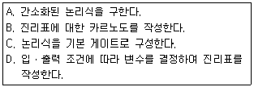
- D → B → A → C
- D → A → B → C
- B → D → A → C
- B → D → C → A
(정답률: 75%)
21. 다음 논리적 연산 중 이항 연산에 해당되는 것은?
- MOVE
- Shift
- Complement
- OR
(정답률: 61%)
22. 하드웨어(H/W)적 요인에 의한 인터럽트가 아닌 것은?
- 정전
- 외부 인터럽트
- 입ㆍ출력 인터럽트
- 프로그램 검사 인터럽트
(정답률: 41%)
23. 다음 그림과 같이 중심 노드를 경유하여 다른 노드와 연결하는 방식으로 전화망 등에 사용되는 통신망은?
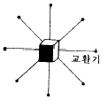
- 계층형 통신망(hierarchical network)
- 루프형 통신망(loop network)
- 성형 통신망(star network)
- 그물형 통신망(mesh network)
(정답률: 71%)
24. 10진수 26을 8421 BCD 코드로 변환하면?
- 0001 0000
- 0002 0006
- 0010 0110
- 0010 1001
(정답률: 81%)
25. "자기 테이프의 시작점을 ( ① )(이)라 하고 끝나는 점을 ( ② )(이)라 한다."( )의 올바른 내용은?
- ① BOT, ② EOT
- ① EOT, ② BOT
- ① IBG, ② 트랙
- ① 트랙, ② IBG
(정답률: 50%)
26. 컴퓨터의 5가지 기본 장치에 포함되지 않는 것은?
- 증폭 장치
- 연산 장치
- 주기억 장치
- 제어 장치
(정답률: 76%)
27. 누산기의 내용을 주기억장치에 기억시키는 것은?
- LOAD
- STORE
- JUMP
- ADD
(정답률: 48%)
28. 컴퓨터가 어떤 프로그램을 실행 중에 긴급사태 등이 발생하면 진행 중인 프로그램을 일시 중단하여 긴급 사태에 대처하고, 긴급 처리가 끝나면 중단했던 프로그램을 재개하는 것은?
- 채널
- 스택
- 버퍼
- 인터럽트
(정답률: 75%)
29. 캐시 기억장치의 사용 목적은?
- 가격을 낮추기 위하여
- 가격을 높이기 위하여
- 처리 속도를 늦게 위하여
- 처리 속도를 빠르게 하기 위하여
(정답률: 87%)
30. 스택(stack)과 관계가 깊은 것은?
- FIFO
- SHIFT
- LIFO
- QUEUE
(정답률: 59%)
3과목: 프로그래밍일반
31. 프로그램의 문서화 목적으로 가장 거리가 먼 것은?
- 프로그램의 유지보수가 용이하다.
- 개발팀에서 운용팀으로 인수 인계가 용이하다.
- 시스템 개발 중 추가 변경에 따른 혼란을 방지할 있다.
- 담당자별 책임 구분을 명확히 할 수 있다.
(정답률: 64%)
32. 인터프리터와 가장 관계 깊은 것은?
- BASIC
- COBOL
- C
- FORTRAN
(정답률: 54%)
33. 구조적 프로그래밍 기법에 대한 설명으로 옳지 않은 것은?
- 프로그램의 수정 및 유지보수가 용이하다.
- 프로그램의 구조가 간결하다.
- 프로그램의 정확성이 증가된다.
- 가능한 GOTO 문을 많이 사용하여야 한다.
(정답률: 84%)
34. 하나의 프로세서가 작업 수행 과정에서 수행하는 기억 장치 접근에서 지나치게 페이지 폴트가 발생하여 전체 시스템의 성능이 저하되는 현상은?
- working set
- thrashing
- locality
- swapping
(정답률: 43%)
35. 프로그램 개발 과정에서 프로그램 안에 내재해 있는 논리적 오류를 발견하고 수정하는 작업은?
- 링킹(linking)
- 로딩(loading)
- 디버깅(debugging)
- 할당(allocation)
(정답률: 85%)
36. 저급 언어(low level language)에 해당하는 것은?
- C
- PASCAL
- COBOL
- ASSEMBLY
(정답률: 61%)
37. 시스템 프로그래밍 언어로서 가장 적당한 것은?
- FORTRAN
- BASIC
- COBOL
- C
(정답률: 82%)
38. 매크로 프로세서의 기본 수행 작업이 아닌 것은?
- 매크로 정의 인식
- 매크로 정의 저장
- 매크로 호출 저장
- 매크로 호출 인식
(정답률: 54%)
39. C 언어의 기억클래스(storage class)에 해당하지 않는 것은?
- 내부 변수(internal variable)
- 자동 변수(automatic variable)
- 정적 변수(static variable)
- 레지스터 변수(register variable)
(정답률: 56%)
40. 운영체제를 수행 기능에 따라 크게 2 가지로 분류한 것으로 옳은 것은?
- 응용프로그램과 처리프로그램
- 제어프로그램과 처리프로그램
- 처리프로그램과 번역프로그램
- 번역프로그램과 응용프로그램
(정답률: 66%)
4과목: 디지털공학
41. 1010의 1의 보수는?
- 0101
- 0110
- 1001
- 0111
(정답률: 83%)
42. 논리식f=(A+B)(A+B‘)를 최소화 시키면?
- f = A + B
- f = A
- f = B
- f = A ㆍ B
(정답률: 53%)
43. 그림과 같은 회로의 명칭은?
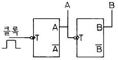
- 2진 리플 계수기
- 4진 리플 계수기
- 동기형 2진 계수기
- 동기형 4진 계수기
(정답률: 43%)
44. 불 대수 정리 중 옳지 않은 것은?
- A+0=A
- Aㆍ1=1
- Aㆍ0=0
- A+1=1
(정답률: 70%)
45. 디지털 순서회로의 대표적인 중규모 집적회로(MSI)는 레지스터, 카운터, 메모리 장치등이다. 이러한 회로를 구성하는 가장 기본적인 순서회로는?
- 가산기
- 플립플롭
- 조합논리 게이트
- 디코더
(정답률: 71%)
46. 다른 하나는?
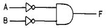
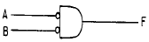
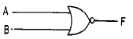
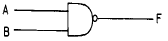
(정답률: 48%)
47. 순서 논리 회로의 기본 구성은?
- 반가산 회로와 AND 게이트
- 전가산 회로와 AND 게이트
- 조합 논리 회로와 논리 소자
- 조합 논리 회로와 기억 소자
(정답률: 38%)
48. 다음 그림과 같이 구성된 회로에서 A의 값이 0011, B의 값은 0101이 입력되면 출력 F 값은?
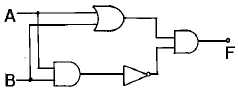
- 1100
- 0110
- 0011
- 1001
(정답률: 55%)
49. 출력은 입력과 같으며, 어떤 내용을 일시적으로 보존하거나 전해지는 신호를 지연시키는 플립플롭은?
- RS
- D
- T
- JK
(정답률: 71%)
50. RS 플립플롭 회로에서 불확실한 상태를 없애기 위하여 출력을 입력으로 궤환시켜 반전 현상이 나타나도록 한 회로는?
- RST 플립플롭 회로
- D 플립플롭 회로
- T 플립플롭 회로
- JK 플립플롭 회로
(정답률: 44%)
51. J-K flip-flop에 의해서 16진 카운터를 구성하고자 할 때 몇 개의 flip-flop이 필요한가?
- 3개
- 4개
- 5개
- 6개
(정답률: 82%)
52. 가산기의 종류에 해당되지 않는 것은?
- ASCII 가산기
- BCD 가산기
- 직렬 가산기
- 병렬 가산기
(정답률: 63%)
53. (110100)2을 그레이 부호로 변환한 것은?
- 100110
- 101110
- 110100
- 111111
(정답률: 71%)
54. 반 감산기에서 차를 얻기 위한 게이트는?
- OR
- AND
- NAND
- X-OR
(정답률: 61%)
55. 5진 카운터를 만들려면 T형 플립플롭이 몇 개 필요한가?
- 1
- 2
- 3
- 4
(정답률: 62%)
56. AND 게이트의 동작 상태를 올바르게 표현한 것은?
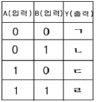
- ㄱ=0, ㄴ=0, ㄷ=0, ㄹ=0
- ㄱ=0, ㄴ=1, ㄷ=1, ㄹ=1
- ㄱ=1, ㄴ=1, ㄷ=1, ㄹ=0
- ㄱ=0, ㄴ=0, ㄷ=0, ㄹ=1
(정답률: 74%)
57. 10진수 20을 2진수로 변환하면?
- 10000(2)
- 10001(2)
- 10100(2)
- 10101(2)
(정답률: 72%)
58. 다음 연산은 불 대수의 기본 법칙 중 무엇인가?
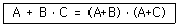
- 교환 법칙
- 결합 법칙
- 분배 법칙
- 드모르간 법칙
(정답률: 62%)
59. 디지털 장치에서 많이 쓰이는 회로로서, 클럭펄스의 수를 세거나 제어 장치에서 중요한 기능을 수행하는 것은?
- 계수 회로
- 발진 회로
- 해독기
- 부호기
(정답률: 70%)
60. 여러 회선의 입력이 한 곳으로 집중될 때 특정 회선을 선택하도록 하므로, 선택기라고도 하는 회로는?
- 멀티플렉서(multiplexer)
- 리플 계수기(ripple counter)
- 디멀티플렉서 (demultiplexer)
- 병렬 계수기(parallel counter)
(정답률: 60%)